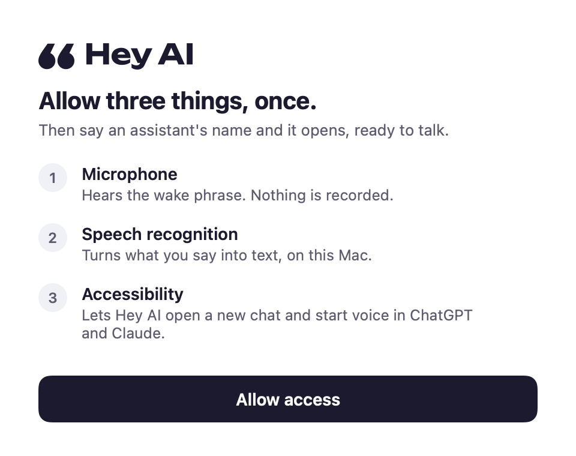
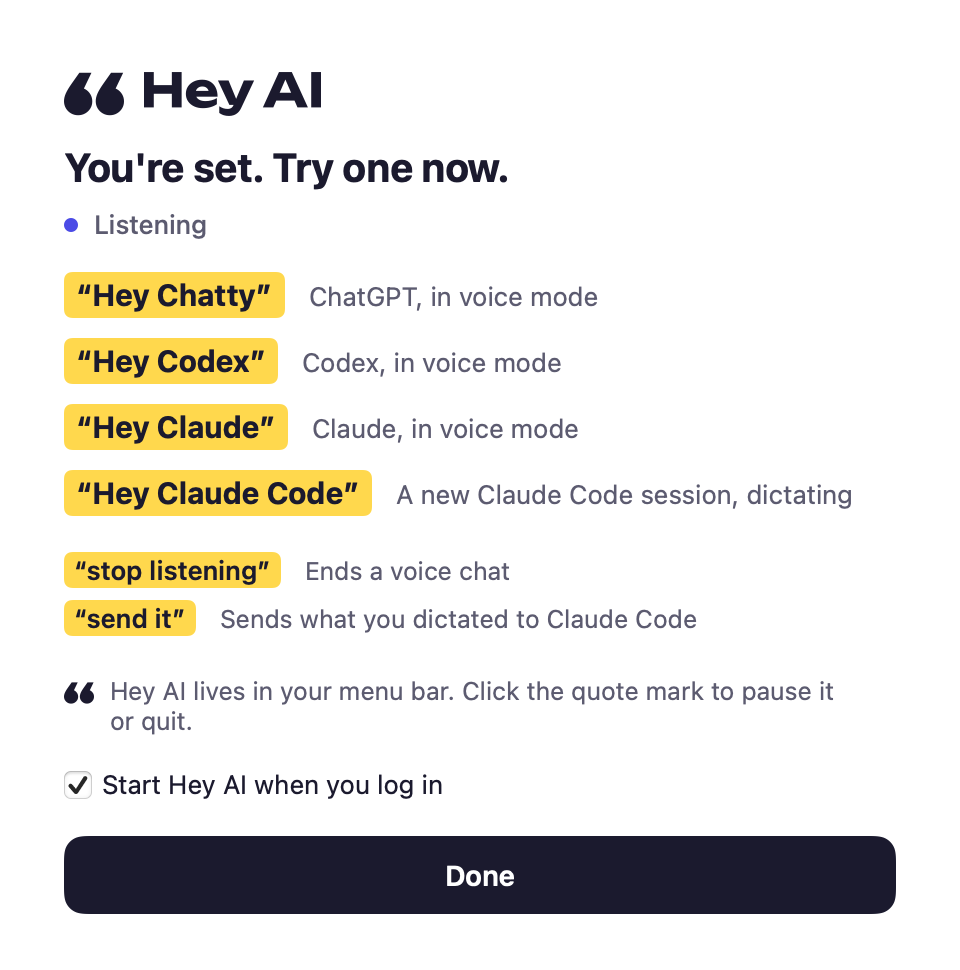

“Hey Chatty”
ChatGPT opens in voice mode, ready to talk.
Hey AI is a free Mac menu-bar app. Say an assistant's name and it opens with voice already on.
curl -fsSL https://raw.githubusercontent.com/notorious-d-e-v/hey-ai/main/install.sh | bash
Paste it into Terminal. Needs macOS 14 or later and the current ChatGPT and/or Claude desktop app. Read the script or download the app yourself.
53 seconds, sound on: ChatGPT, Claude and Claude Code, opened by voice. The captions show what was said.
Up and talking in a minute
Paste one line
The installer downloads Hey AI, checks its SHA-256, puts it in Applications and opens it.
Allow three things
Microphone, speech recognition and Accessibility, from one window. You only do this once. If you use ChatGPT, Hey AI also asks to restart it once, so ChatGPT picks up its voice hotkey.
Say “Hey Chatty”
ChatGPT opens with voice on. Talk. Say “stop listening” when you're done.


What you can say
| “Hey Chatty” | ChatGPT opens a new voice chat. |
| “Hey Codex” | The same ChatGPT voice chat. Its voice agent can hand work to Codex. |
| “Hey Claude” | Claude opens a new chat in voice mode. |
| “Hey Claude Code” | A new Claude Code session starts, already dictating. End with “send it”, or pause and say “yes”. |
| “Stop listening” | Ends whatever voice chat is open, right away. |
It listens for names, nothing else
Hey AI uses Apple's on-device speech recognition, so your voice stays on your Mac and nothing is recorded. The log keeps only which phrase it heard and what it opened. (An online fallback for Macs without on-device speech exists in the menu, off by default.)
You'll see macOS's orange microphone dot while it listens. Pause it from the menu bar any time. While ChatGPT or Claude is already listening, Hey AI ignores wake phrases, so talking to your assistant never opens a second one.
Why Accessibility? ChatGPT and Claude have no “start voice” link. After a wake phrase, Hey AI presses ChatGPT's own Voice Chat hotkey, presses Claude's voice button in a new chat, or starts Claude Code's dictation with ⌘D.
Accessibility would let an app read and control any window. Hey AI only touches ChatGPT and Claude, and only after a wake phrase. Keys meant for an app go only while that app is in front; ChatGPT's voice hotkey is the one that works from anywhere. The code is short.
Questions
Does it work when my Mac is locked?
It hears you, but macOS doesn't let any app drive other apps behind the lock screen. Keep Screen Awake in the menu stops the display from sleeping so your Mac doesn't lock on its own. That also means an unattended Mac stays unlocked, so only use it where that's fine.
Will it drain my battery?
Listening costs about 3% of one CPU core and 150 MB of memory on an M4 Pro, nearly all of it Apple's speech recognizer. Pause it from the menu bar when you don't need it.
Can I use AirPods?
Yes, but while any app holds an AirPods microphone, macOS switches them to call-quality sound. Use your Mac's built-in mic as the input to keep music sounding right.
How do I uninstall it?
Run curl -fsSL https://raw.githubusercontent.com/notorious-d-e-v/hey-ai/main/uninstall.sh | bash. It removes the app, its settings, logs, permissions and login item.
Why “Chatty”?
“Hey ChatGPT” is a mouthful, and short names are easier to hear correctly. Chatty is ChatGPT.